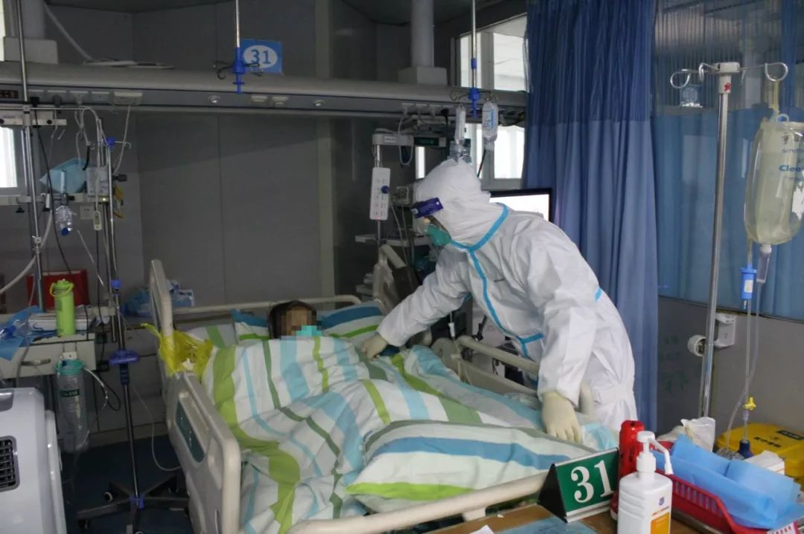

中青报记者大年初一探访武汉市第五医院
原文链接 备份链接 本文约1471字 预计阅读时间4分钟 中青报·中青网武汉前方报道组 王嘉兴 大年初一，记者来到武汉市第五医院门诊大厅。接近中午12点，大厅里还排着多条长队，有的患者坐在自带的塑料小板凳上排队，所有的人都带着口罩。大厅里 …

希望情况尽快能得到改善


武汉医院现在防护服短缺，一线医护人员不敢吃饭、喝水、上厕所，因为医用防护服是一次性的，一旦脱下就要换新的。 本刊记者/周群峰 摄
近日来，网上有关于武汉市医务人员被感染的消息出现。武汉市某三甲医院眼科副主任医师张馨就是一名感染了新型冠状病毒的肺炎患者，她向《中国新闻周刊》讲述了自己得病前后的经历。
大约在一周前，我所在的病区接到很多发热病人，当时说是甲流或者乙流，所以对他们只做了常规筛查，该住院还是住院，只是注意防控。后来，门诊陆续也有很多这样的病人，医生们当时也只是戴着普通的医用口罩。接诊了几个病人之后，我在1月20号下午开始出现了畏寒、发热的症状。第二天凌晨，我到我们医院的发热门诊就诊。
当时是将近凌晨一点钟，我挂到的就诊号是324号。我根本进不去门诊，前面排队的患者真的是太多太多了。我只能打电话给同事，让他们告诉我需要做哪些检查。因为我是医院的大夫，可以在我们医院开单子。
那个时候，还没有N95口罩，我只能戴着自己的普通外科口罩，给自己开化验单，做检查。检查结果出来之后，再通过微信发给我们发热门诊的同事看。他们给我开了奥司他韦、阿比多尔等抗病毒药物，我自己去药店买药。到药店后发现，那里只有一种抗病毒的药，而且只剩一盒了，仅够吃两天。这两天吃完之后，到处买都买不着，只能托熟人去买。好在我是医务人员，还能找人到其他专科医院去买，然后寄给我，我不知道那些得病的普通老百姓怎么办。
我是星期一发病的，那时候，我们医院还不能做冠状病毒检测。直到22号，医院才能做，我就去检测了，发现有一项指标是阳性。
那个时候，我也住不了院，因为病房都满了。我就自己找了一个地方，一个人隔离。家人每天都到隔离地点给我送饭。每天吃饭时，都是家人送到门口放在地上，敲三声门，等他们走了之后，我才敢开门拿。
据我所知，医务人员感染的情况其实是很多的。我算轻症，肺部情况没有那么严重，可以给自己治疗。如果是重症，按规定就要转到定点医院。但因为定点医院人满为患，我们科室有的人肺部出现了问题，就只能在我们医院的一个病区隔离治疗。截至目前，仅我们科室发现检测结果呈阳性的医务人员起码有5个了。那些一线科室的医生肯定有更多感染的。
1月23日凌晨，武汉宣布“封城”了。封城后，我们临床一线医生的防护用品一直短缺。
虽然全国各地，包括海外都有爱心人士捐款、捐物，但是这些东西进不来，因为中间渠道不通畅。医院不能自己去接受捐赠，而是要先汇报，再通过红十字会统一接收、发放，要走流程。
武汉现在已经分区封闭了，在这样的情况下，还需要上级疏通各个部门，从交通运输到物资的接受、分发，如果是海外寄送的物资，还要经过海关、检验检疫。但现在上级部门禁止各个医院私自去接受捐款、捐物，为解决燃眉之急，我们现在只能是自己花钱去买。
为解决这个问题，我们医院和其他几家三甲医院只好越过武汉市卫健委，集体发布了接受社会捐助的公告。这样的做法实在是医院的无奈之举。通过这样的法子，现在物资比最开始的时候要充裕一些了，但还依然还是不够。
比如，现在有隔离服了，但还是不够用。一线医生和我说，因为隔离服不够用，他们不敢吃饭、不敢喝水、不敢上厕所，因为一旦脱下防护服做这些事情，再重新穿时就要换新的。
我们的麻醉师插管没有护目镜，就用泳镜，后来连泳镜也买不着了。我们科有护士去发热门诊支援，第一天没有防护服，只有一个N95口罩，没有戴护目镜，结果三天后，她再检查的时候，三项抗体全是阳性。
昨天是农历年大年三十。值班同事和我说，她们在医院，一边看着春晚，一边在哭。
我现在虽然指标已经转阴了，但还在隔离中，没有切身处在那个环境里，很难体会。我们还是边缘科室，不是真正的一线。那些真正在一线的医护人员，那些在网上视频里大哭的医务人员，我想她们的心态真的是崩溃的。这就像一个战士，没有枪，还要去上战场。我昨天去发热门诊检查的时候，还看到有患者对着医生大骂。
政府现在应该已经重视物资紧缺这个问题了，但在物资补足之前的空档期，有多少人会有风险呢？我不知道。我只希望这种情况尽快能得到改善，每个医生能得到防护，每个护士都不被感染。
（应受访者要求，文中张馨为化名）
值班编辑：石若萧
推荐阅读
▼


原文链接 备份链接 本文约1471字 预计阅读时间4分钟 中青报·中青网武汉前方报道组 王嘉兴 大年初一，记者来到武汉市第五医院门诊大厅。接近中午12点，大厅里还排着多条长队，有的患者坐在自带的塑料小板凳上排队，所有的人都带着口罩。大厅里 …
原文链接 备份链接 记者 | 驳静 董冀宁 实习记者 | 李秀莉 昨天下午，“湖北之声”发布《武汉紧急求援》，指出多家医院物资紧张，可能只够维持3-5天。本刊记者接触到的一线医护人员也反应了同样的情况。“为什么我们显得这么着急呢？病毒肆 …
原文链接 备份链接 【财新网】（实习记者 张舒琳 记者 马丹萌） 门诊排起长龙，留观区一“床”难求 武汉市汉口医院，是武汉收治新型冠状病毒患者的定点医院之一。发热门诊大厅内，等待问诊的患者排起长长的队伍。大厅前后均只打开一道玻璃门，两 …
原文链接 备份链接 记者/韩谦 魏晓涵 李佳楠 张帆 颜星悦 佟晓宇 梁婷 李东 郭慧敏 实习记者/陈威敬 龙天音 编辑/杨宝璐 宋建华 被确诊为河南省首例新型冠状病毒感染的肺炎患者，曾于1月8日在太康县人民医院治疗 国家卫健委消息，截 …
原文链接 备份链接 ********** *************协和医院发热门诊门口，排队患者人数较多，约为50多人，已经从门诊楼内排到了楼外的人行道上，一旁的输液室则有20多人排队。一位未佩戴口罩的患者进入楼内，立刻有医护人员向其发 …